Ah, a question many raise. Just what is a Feast of the Haggis? And what is a “haggis?” The annual Feast of the Haggis is a celebration all of all things Scottish, put on by Illinois’s St. Andrew’s Society, aka Chicago Scots, the oldest charity in Illinois. This year, the 177TH anniversary dinner was held at the Chicago History Museum, and needless to say, haggis was on the menu. In a poll of 1000 Americans who visited Scotland in 2003, one third of them thought haggis is an animal. If you’re visiting Edinburgh, you’ll find it as the topping of a pizza in a shop outside the castle. If you’re a traditional Scot, authentic haggis is a savory pudding made of lamb lungs and other offal boiled with oats in a sheep’s stomach. If you’re living in America, thanks to the USDA, the ingredients must be different. It’s no wonder, the haggis can be a mysterious object to those not born to the tartan.
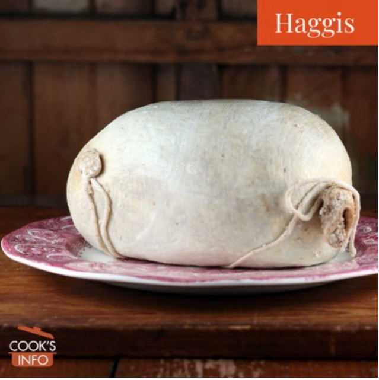
Although considered the national dish of Scotland, the haggis has mysterious origins. Some authors believe it was created by the Romans who needed to use the organs of animals killed in the field before they spoiled. Others suggest the word haggis itself is derived from a Norwegian word meaning to chop up. Even France is credited with a 13th century prototype. What we call haggis today probably originated in the north of England or Scotland in the 17th century. It was the English who labeled haggis as Scottish when England’s 18th century prosperity contrasted with increasing poverty in Scotland. Author Samuel Johnson is quoted as describing oats as “A grain, which in England is generally given to horses, but in Scotland supports the people.” Haggis became associated with the perceived-to-be uncivilized Scots.
Oats are in fact a key ingredient in haggis. The basic recipe is: “a savory pudding containing sheep’s pluck (heart, liver, and lungs), minced with onion, oatmeal, suet, spices, and salt, mixed with stock, and cooked while traditionally encased in the animal’s stomach (Oxford English Dictionary).” The U.S. version must be made without benefit of sheep lungs. In 1971, the USDA studied the air vessels in lungs and found what they determined were possible contaminants either inhaled by the animal or introduced from the stomach during slaughter. The resulting regulation from the USDA Safety and Inspection Service says definitively:
§ 310.16 Disposition of lungs.
(a) Livestock lungs shall not be saved for use as human food.
Scotland has never had such a ban, but because of the law, authentic Scottish haggis can no longer be imported into the U.S. There are many American variations. Some use mostly pork instead of lamb, others are formulated to be kosher, some even vegan. Spices like coriander, nutmeg and cinnamon are commonly used.
One of Chicago’s best-known fans of haggis was the late chef Charlie Trotter, who once prepared his own haggis recipe for a Chicago Scots dinner. Haggis has its haters and lovers. Charlie Trotter was the latter. “It is one of the great treats. And it can be pungent depending how it’s made,” he told Judy Hevrdejs (Chicago Tribune 2011). “But if you’re a person that likes offal or innards or organ meats and things, this is just great. It’s got a mustiness to it. You’ve got to drink a big red wine, the kind that turns your teeth purple, but it’s great stuff. No doubt.”
Haggis is found year-round in Scottish supermarkets, sometimes freshly assembled, sometimes canned. It can be found online here and in specialty markets. The label on a can of The Caledonian Kitchen’s haggis, processed in Livingston, Texas, for example, lists water, lamb, hydrated pin oats, beef liver, refined beef suet, onion powder, onions, salt, Kitchen Bouquet, vegetable base water, carrots, celery, cabbage, onion, parsley, turnips, parsnips.
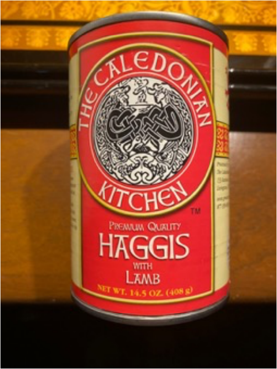
Food for Thought, the Feast of the Haggis caterer, totally embraced the Scottish theme. It chose The Caledonian Kitchen to prepare the haggis, shipped frozen and steamed on location at the Chicago History Museum. A vegetarian option including black beans and mushrooms was also prepared for table service. As guests arrived, such Scottish hors d’oeuvres as Partan Bree Shooters (Scottish blue crab bisque and Ardbroath Smokies (smoked haddock cake) were passed. Single malt scotch was of course available at the bar.
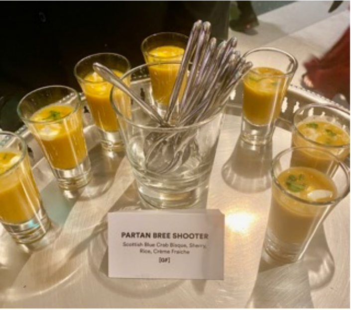 |
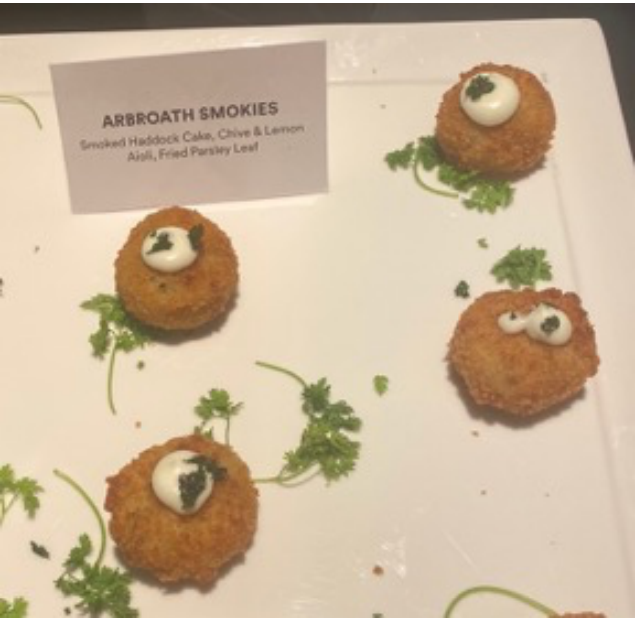 |
Meanwhile, in the kitchen, the haggis was being prepped for its dramatic entrance. Executive Field Chef Louisa Rothman lined a platter with greens for the official presentation of a whole haggis. At the last moment, the steamed haggis was centered on the bed of greens, ready to be piped into the dining room (as with a bagpipe, not a pastry tube!).
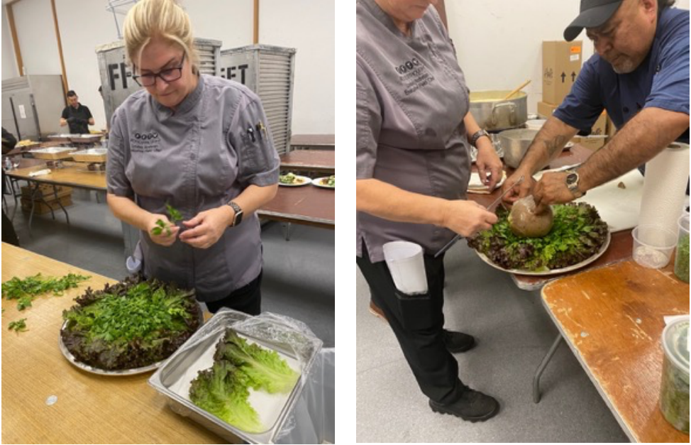
If one wants to make haggis in the U.S. from scratch, talk to Carol Summerfield! Working with a group of Northshore members of Chicago Scots, she is partnering with a butcher to put together her own well-researched recipe for a February 4, 2023, dinner for a Robert Burns birthday dinner. Burns’ birthday is celebrated by Scots across the country. Her ingredients Include lamb, lamb heart, lamb kidneys, chicken livers, bacon, pin oats, and seasonings including whiskey, cloves, allspice and nutmeg plus lemon and orange zest.
Guests, of course, had embraced the theme of all things Scottish with a vengeance! Tartans appeared just about everywhere one could imagine: on traditional kilts, shawls, sashes, skirts, trousers, jackets, dresses, hats and even shoes! Some tartans were more authentic than others. When asked for the name of the tartan on his shoes, their owner smiled and responded, “Gucci!”
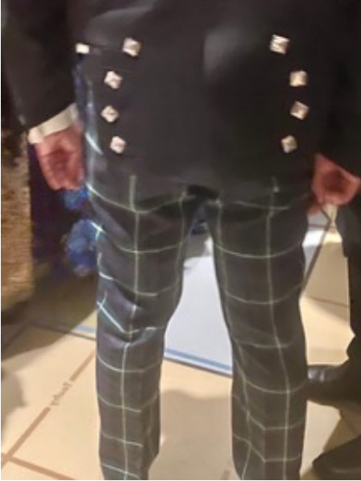 |
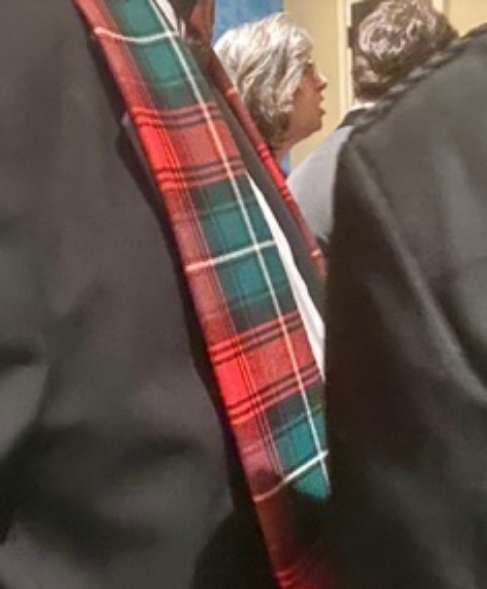 |
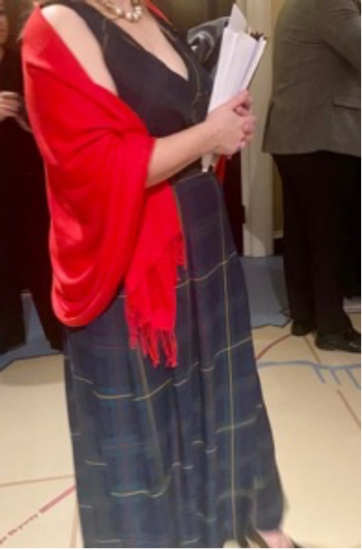 |
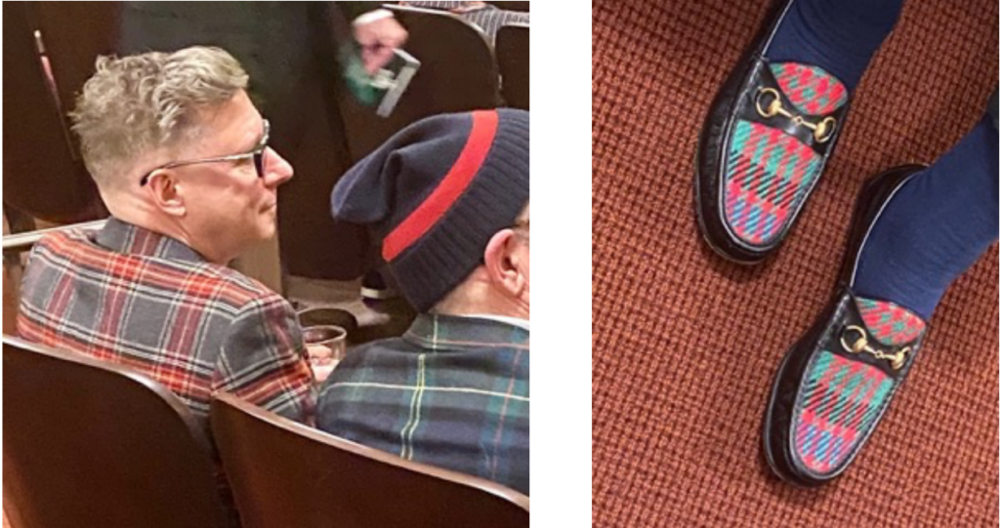
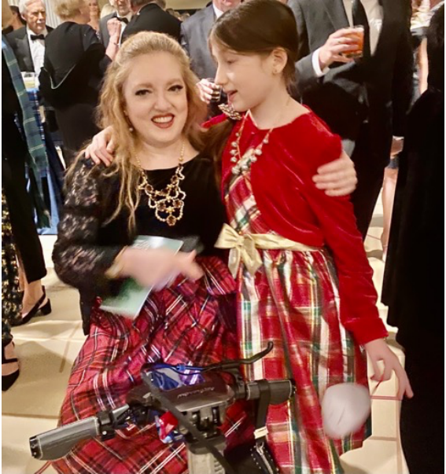
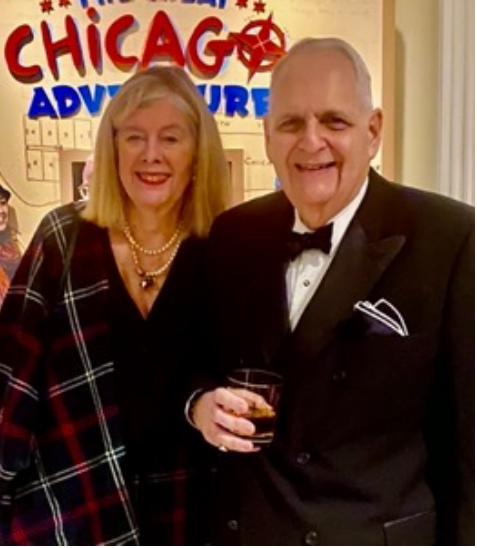 Lisa and Cary Malkin |
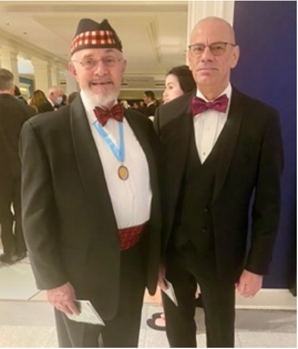 Jim Alexander and Curtis Drayer |
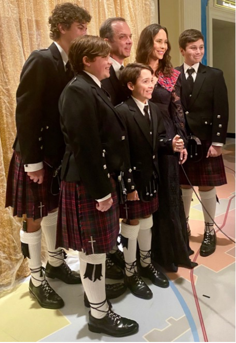
While the haggis was being plated, in the dining room guests were toasting the United States of America, Scotland, and for the first time England’s King Charles III (rather than the late queen), with scotch, of course. The anthems of all three countries were sung, the signal for the haggis to be carried into the ballroom.
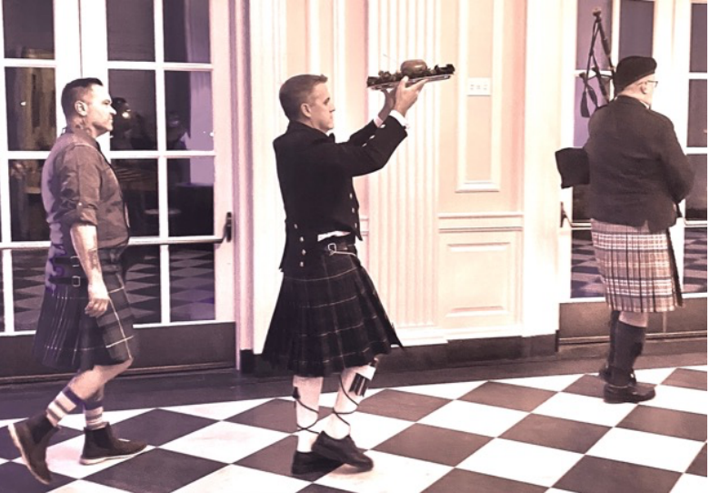
The piping of the haggis is part of a hallowed tradition. In fact, at one time, when it was still legal to import it from Scotland, the haggis was ceremoniously greeted as it arrived by plane or helicopter. One year, there were delays first in England and in the US where it was labelled a possible carrier of foot and mouth disease. There was a threat to burn it! Finally, a doctor in the U.S. Bureau of Animal Industry declared haggis fit to eat, and it made it to the dinner.
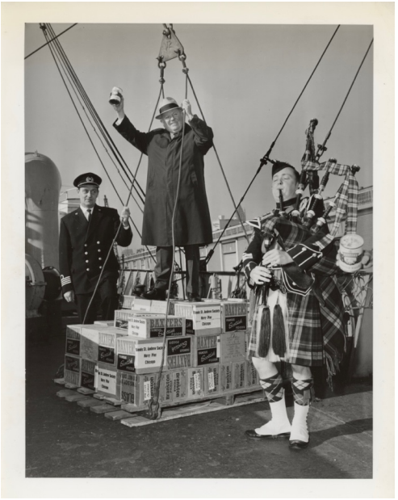
When the haggis was marched into the Chicago History Museum dining room, it was time to hear the reason once again behind the elevation of the haggis: the reading of Scotland’s beloved poet Robert Burns’ famous poem, recited at Scottish celebrations around the country, his “Address to a Haggis.” The highly anticipated, animated, and energetic John M. Crombie once again honored the haggis with great reverence in his colorful Scottish dialect. The first verse:
Broad Scots Dialect
Fair fa’ your honest, sonsie face,
Great chieftain o’ the puddin-race!
Aboon them a’ ye tak your place,
Painch, tripe, or thairm:
Weel are ye wordy o’ a grace
As lang’s my arm.
Here’s the English translation of the first verse:
Good luck to you and your honest, plump face,
Great chieftain of the pudding race!
Above them all you take your place,
gut, stomach-lining, or intestine,
You’re well worth a grace
as long as my arm.
(For the full poem with translation, go to:
https://www.maybole.org/notables/Burns/haggis.htm)
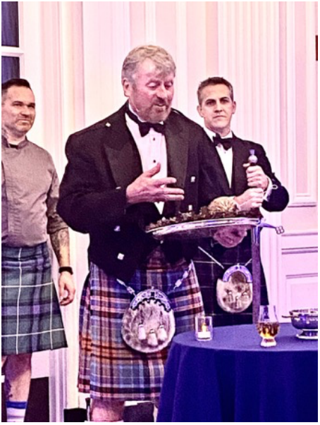
At long last, the guests welcomed platters of haggis served with the traditional “neeps and tatties,” mashed turnips and potatoes as an appetizer course. Unlike Charlie Trotter’s description, this haggis was definitely an American take on the traditional recipe, to this taster, resembling chopped beef with mild seasoning. The haggis was followed by an entrée of salmon and shoulder loin of beef. Once again Food for Thought dug into traditional Scottish cuisine for a dessert buffet including Cranachan (oats pudding with whiskey cream fresh raspberry compote), Scottish Macaron Bar, and Scottish Fern Cake (tart shell with Blackberry jam, almond frangipane, icing).
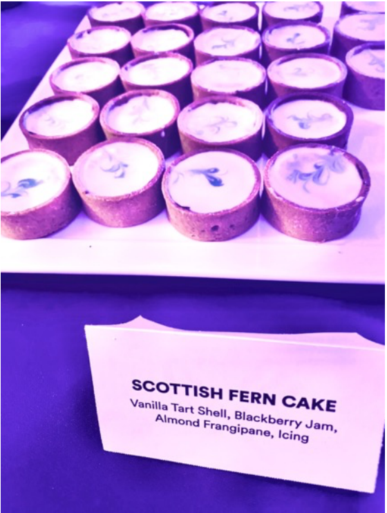
The evening encompassed much more than eating. Attendees were entertained by the Thistle and Heather Highland Dancers and the Midlothian Scottish Pipe Band. They heard a report on the state of the Society and an update on renovations at the evening’s beneficiary, the acclaimed Caledonia Senior Living and Memory Care residence. A caricature of the late Queen Elizabeth by Chicago artist David Csicsko was won by Jim Alexander, a past Citizen of the Year. Celebrating the organization’s 177th year, President Gus Noble OBE presided over Chicago Scots’ festive evening that not only reinforced its continuing care of aging citizens, but also celebrated the legacy of Robbie Burns, Scotland and of course the haggis!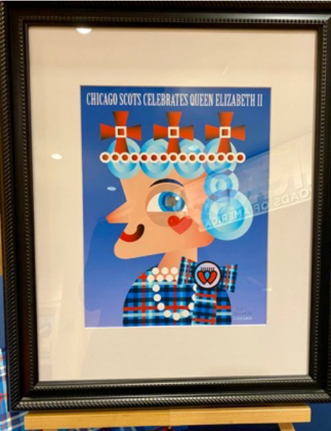